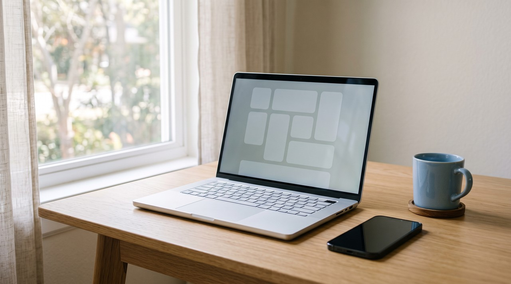
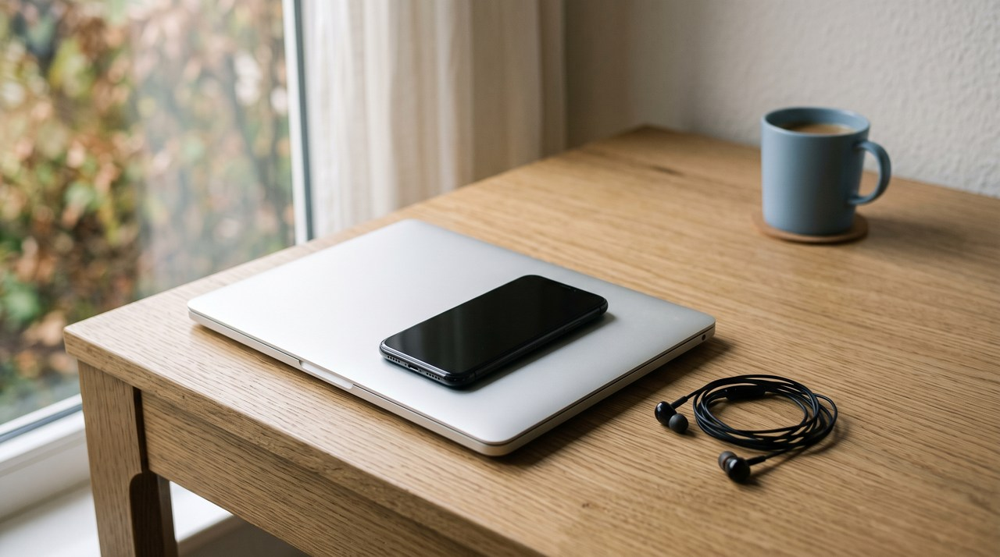
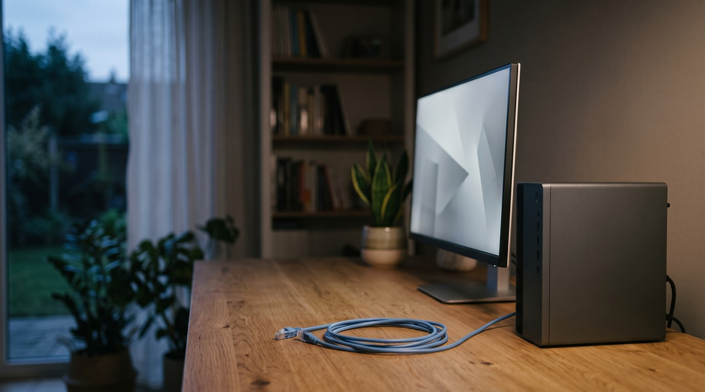

ElevenLabs download for PC: there is no Windows app, so here is what you can actually install

You might be looking for an official ElevenLabs app for Windows or Mac, but there is not one. ElevenLabs runs in your web browser at elevenlabs.io, and their only official apps are for iPhone, iPad and Android. A page offering an ElevenLabs PC download is either an Android emulator, a developer library, or an unofficial file you should avoid. If you want a voice cloner that installs on Windows and runs offline, you need a different app, like VoiceClone.
| What you find when you search | Official from ElevenLabs? | Installs on Windows? | Works without internet? | Clones a voice? |
|---|---|---|---|---|
| elevenlabs.io in your browser | Yes | No, nothing to install | No | Yes, instant and professional |
| The ElevenLabs phone app | Yes | No, iPhone, iPad and Android only | No | Instant clones only |
| The phone app inside an Android emulator | The app is, the emulator is not | Yes, the emulator does | No | Instant clones only |
| The elevenlabs Python package | Yes, for developers | Yes, as a code library | No, it calls their servers | Through their API |
| A page or repo called "ElevenLabs PC download" | No | It wants you to run a file | Unknown | Do not run it to find out |
| VoiceClone | No, it is my own app | Yes, Windows 10 and 11 | Yes, after a 1.3 GB setup download | Yes, quick clone and full training |
Written by Inam. I built VoiceClone, so read this knowing I am not neutral. My other engineering notes are on designesh.com. Last updated 5 October 2026.
You want to use ElevenLabs on your computer like a normal program, so you search for an ElevenLabs download for PC. Your search results will show you emulators, file sites and download buttons, but none of them come from ElevenLabs. That happens because there is nothing official to download.
There is no ElevenLabs app for Windows, so you should just use it in your browser at elevenlabs.io, and do not run any file that calls itself the ElevenLabs PC download.
Does ElevenLabs have a desktop app for Windows or Mac?
They do not have a PC version. ElevenLabs is a cloud service, which means their voice models run on their own servers, and your web browser is just the window you use to talk to them. The full product lives at elevenlabs.io, including voice cloning, and it opens in Chrome, Edge, Firefox or Safari like any website.
I checked their own help page on whether ElevenLabs has an official app. It lists two native apps, and both are for phones and tablets. They are for iPhone, iPad and Android, so a Windows or Mac version is not on that list.
One thing can confuse people here. ElevenReader is their separate app for listening to books and articles, and it says it is available on desktop. But they just mean the website elevenreader.io in your browser, and it is a reader instead of a voice cloner.
What can the ElevenLabs phone app do?
The phone app is the closest thing to an installed version of ElevenLabs. I read their page on what the mobile app can do. It has text to speech, the voice library, the voice changer, the voice isolator and Instant Voice Cloning.
Professional Voice Cloning is not in the app. Their page says you can only use it on elevenlabs.io, and the same applies to Studio, Dubbing and their music tool. An instant clone just copies your voice from a short sample. A professional clone trains the model on your recordings, and I explained that difference in my article on instant vs professional voice cloning.

Can you run the ElevenLabs app on a PC with an emulator?
You will see pages offering "ElevenLabs for PC", but they are usually offering an Android emulator like BlueStacks. An emulator is a program that pretends to be an Android phone inside Windows. You install the emulator, sign in to the Play Store, and then you install the normal ElevenLabs phone app inside it.
This method works, but you should think about what you actually get. It is still the phone app, so it only has instant clones. Every word you generate is still made on ElevenLabs' servers. You have basically installed a fake phone to do what already works directly in your browser.
What is the ElevenLabs Python download?
Some download pages point to the elevenlabs package on PyPI. PyPI is a public store for Python code, and this package is real and official. It is just a library that developers put inside their own programs.
This library is not a voice cloner on your PC. It takes your text and sends it to the ElevenLabs API, which is their server's door for programs. It uses your API key, and the audio comes back from their servers. That means it needs the internet and uses your plan's credits, exactly the same as the website does.
Are the ElevenLabs PC download sites safe?
You should treat those downloads as unsafe. ElevenLabs does not publish a Windows installer, so any file that claims to be one was made by someone else. You have no way to know what is really inside it. When I searched for this article, one top result was a GitHub account named after an ElevenLabs PC download. I opened it on 5 October 2026, and the page was already gone.
This pattern is not new. In July 2026 the security company Arctic Wolf reported on 292 fake GitHub repositories posing as real software. Every single one had a nice readme page with download links. Those links led to a page that served malware, and the malware steals your saved browser data, crypto wallets and messaging logins.
I use a simple check for any program I download, and that includes my own:
- Look for the download link on the maker's own website, and do not trust a file site or a search ad.
- If the maker's site does not have a Windows download, then there is no Windows download. It does not matter what another page tells you.
- Check who published the file before you run it, and run it through a scanner like VirusTotal if you feel unsure.
How do you get a voice cloner that actually installs on Windows?
You might want a PC download because you want the tool on your own computer, with no monthly plan and no files uploaded to the internet. If that is true, ElevenLabs is the wrong choice for you, and it is fine to admit that. It was built to run in the cloud. A program that actually installs and runs offline must run the voice model on your own machine.
That exact reason is why I built VoiceClone. It is a Windows app for Windows 10 and 11. Inside it is GPT-SoVITS, which is an open source voice cloning engine that runs locally on your PC. You can get it from the VoiceClone download page on this site. My release page lists a SHA 256 checksum, and that is a digital fingerprint you can use to confirm I published the file.
- Unzip the folder and double click START VoiceClone.bat. The first time you run it, it downloads the engine. The engine is about 1.3 GB, and that download takes 10 to 30 minutes one time.
- Record 1 to 3 minutes of yourself talking normally. The app takes that audio and makes a quick clone in about a minute.
- If you want it to sound closer to you, press Make it perfect. It trains a real copy of your voice right on your PC. That training takes under an hour on a normal NVIDIA graphics card, and it takes longer on a PC without one.

After you finish that setup, nothing ever leaves your computer. The app keeps working even with the internet off. The free version lets you clone and fully train one voice, and you can generate 3 times to hear it properly. I sell a $49 one time license that gives you unlimited length, the word editor, retraining and exports. There is no subscription.
When is ElevenLabs in the browser the better choice?
I want to be completely fair about this. For some people, the browser version is simply a better choice.
- ElevenLabs speaks many languages, and VoiceClone only speaks English.
- ElevenLabs runs on a Mac, a Chromebook or a work laptop where you cannot install anything. VoiceClone needs Windows.
- The browser version has no setup at all. Their servers do the heavy work, so an old laptop works fine.
If you need other languages or you use a Mac, just use ElevenLabs in your browser. If you want your voice on your own Windows PC with no monthly fee, use an app that actually runs there.
FAQ
Is there an ElevenLabs app for Windows?
They do not have one. ElevenLabs only makes official apps for iPhone, iPad and Android. On a computer, you just use it in your browser at elevenlabs.io. Any Windows installer claiming to be ElevenLabs was made by someone else.
Can I use ElevenLabs offline?
You cannot. Every voice is generated on ElevenLabs' servers, so the website, the phone app and the Python library all require an internet connection. If you want offline voice cloning, you need a tool that runs the model on your own PC. VoiceClone does that after a one time 1.3 GB setup download.
Is it safe to download ElevenLabs from BlueStacks or a file site?
An emulator like BlueStacks installs the official phone app inside a fake Android phone, and that app is real. But a file site or GitHub page offering an ElevenLabs PC installer is not official. Fake download repositories are a known way of spreading malware, so you should not run those files.
Does the ElevenLabs phone app have voice cloning?
The phone app has Instant Voice Cloning, and that just copies your voice from a short sample. It does not have Professional Voice Cloning, where the model trains on your recordings. That professional feature is only on the elevenlabs.io website.
Sources: the ElevenLabs help pages on official apps and on mobile app features, read on 5 October 2026, the ElevenReader desktop help page, the elevenlabs package page on PyPI, BleepingComputer's report of 14 July 2026 on Arctic Wolf's findings, and the VoiceClone product page on myvoiceclones.com.
Hear your own voice come back.
The free Windows app clones and fully trains one voice, yours, on your own PC. No account, no upload, and the download starts right away.